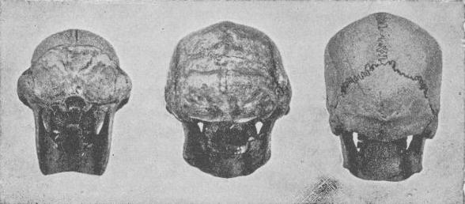

Rückansicht von Sinanthropus

Rückansichten der Schädel einer weiblichen Gorilla, der Rekonstruktion von Weidenreichs Peking-Mann und eines modernen Menschen. (Entnommen aus Fossil Men, Boule und Vallois 1957)
Das folgende Zitat von Bowden (1981) wird als Beweis dafür angeführt, dass Peking-Mensch ein Affe ist:
"Von hinten betrachtet ist die Oberseite des Schädels von Sinanthropus grob dreieckig geformt, wie bei Affen, und nicht oval, wie beim Menschen." (Teilhard de Chardin 1930)
Teilhard de Chardins ursprünglicher Bericht über den ersten Schädel des Pekinger Menschen wurde 1930 in Revue des Questions Scientifiques veröffentlicht. Er und viele andere Aufsätze wurden 1956 in seinem Buch L'Apparition de l'Homme neu veröffentlicht. Die obige Übersetzung wurde von O'Connell (1969) aus diesem Buch erstellt.
Bowden verweist auf das oben zitierte Zitat als stammend aus The Appearance of Man, einer englischen Übersetzung von Teilhards Buch aus dem Jahr 1965. Dies ist jedoch nicht der Fall, da im englischen Übersetzungstext der Abschnitt, der dem obigen Zitat entspricht, lautet:
"... von hinten (in 'norma occipitalis') betrachtet, weist der Sinanthropus-Schädel eine etwa dreieckige Form auf (ähnlich der der Affen) statt einer eiförmigen (wie bei heutigen Menschen)."
Offensichtlich hat Bowden anstatt die autorisierte englische Übersetzung des Buches, auf das er verwiesen hatte, die Übersetzung von O'Connells der französischen Version kopiert. Die beiden Versionen unterscheiden sich erheblich. O'Connell sagt, der Schädel habe eine „großzügig dreieckige Form wie die von Affen", während die autorisierte Übersetzung sich auf „eine ungefähr dreieckige Form (wie die der Primaten)" bezieht.
Obwohl ich keine Kopie des ursprünglichen französischen Artikels habe, glaube ich, dass ich rekonstruieren kann, was passiert ist. In beiden Fällen liegt die Schuld bei O'Connell, der Übersetzungsfehler begangen hat, die seinen Fall begünstigten.
Der Begriff „simian" kann sich sowohl auf Affen als auch auf Affenaffen beziehen, und im Kontext von Teilhards Artikel ist „Affenaffen" zweifellos die beabsichtigte Bedeutung. Im ursprünglichen Französisch könnte das verwendete Wort entweder „simien" oder „singe" gewesen sein. Obwohl das Wort „singe" normalerweise als „Affe" übersetzt wird, kann es sich entweder auf „Affenaffen" oder „Affe" beziehen, da es im Französischen kein Wort für „Affenaffen" gibt. „Simien" verweist, wie „simian" im Englischen, sowohl auf Affenaffen als auch auf Affen. Es gibt keinen Grund anzunehmen, dass Boule und Vallois Sinanthropus mit einem Affen verglichen haben, anstatt mit einem Affenaffen.
Wichtiger ist jedoch, dass das Wort "grossly" fast sicher aus dem französischen Wort "grossièrement" übersetzt wurde. Dies ist ein weiterer Fehler von O'Connell, da dieses Wort genauer als "roughly" (ungefähr) übersetzt wird, wie es in der englischen Übersetzung des Buches von Teilhard geschehen ist. Somit wurde ein Ausdruck, dessen ursprüngliche Bedeutung war, dass das Schädelknochen des Pekinger Menschen eine ungefähr affenähnliche Form hatte (was korrekt ist), nach der fehlerhaften Übersetzung von O'Connell zu einer Aussage, dass der Schädel eine grob menschenaffenähnliche Form hatte. Für sowohl O'Connell als auch Bowden wurde diese Aussage dann zu einer wesentlichen Begründung für ihre Behauptungen, dass das Schädelknochen des Pekinger Menschen das eines Affen sei.
Eine solche Behauptung ist atemberaubend inkompetent. Der fragliche Schädel (Schädel III) hatte ein Volumen von 915 cc, mehr als das Doppelte der Größe eines durchschnittenen Schimpansen-Schädels, und Affenschädel sind deutlich kleiner als die von Schimpansen. Jeder kompetente, oder sogar inkompetente, Anatom würde sofort erkennen, dass keiner der Schädel des Pekinger Menschen (die anderen sind alle größer als Schädel III) möglicherweise zu einem Affen gehören könnte.
O'Connell schlug sich mit einem Zitat, das aus dem Französischen von Marcellin Boule (1937) übersetzt wurde, noch viel schlechter. Nach O'Connell habe Boule gesagt:
"Zu dieser fantastischen Hypothese (von Abbé Breuil und Fr. Teilhard de Chardin), wonach die Besitzer der menschenaffenartigen Schädel die Urheber der großangelegten Industrie waren, erlaube ich mir, eine Meinung vorzuziehen, die besser mit den Ergebnissen meiner Studien übereinstimmt, nämlich dass der Jäger (der die Schädel zertrümmerte) ein echter Mensch war und dass die geschnittenen Steine usw. sein Werk waren" (O'Connell 1969, behauptend, Boule 1937 zu zitieren)
O'Connell fuhr fort zu sagen, dass Boules Urteil gewesen sei, Sinanthropus sei ein Makaken oder Affe gewesen. Das ist falsch; Boules Schlussfolgerung im Jahr 1937 war, dass Sinanthropus zwischen Affen und Menschen intermediär gewesen sei:
"Es ist dennoch evident, dass Sinanthropus und sein Bruder Pithecanthropus, sowohl nach dem Volumen ihres Gehirns als auch nach dem, was wir über die anatomische Struktur ihres Schädels wissen, in der Reihe der höheren Primaten zwischen den großen Affen und den Hominiens eingeschoben sind". (Boule 1937, S. 21, meine Übersetzung)
O'Connells Zitat ist weniger eine Fehlübersetzung als vielmehr eine Fälschung. Das oben zitierte Zitat findet sich nirgends in Boules Artikel; die nächstliegende Annäherung lautet wie folgt:
"Für diese Hypothese, wie fantastisch sie auch sein mag, gestatte ich mir, diese vorzuziehen, die mir als befriedigender erscheint, während sie einfacher ist und besser mit der Gesamtheit unseres Wissens übereinstimmt: der Jäger war ein echter Mensch, von dem wir die Steinindustrie gefunden haben und der Sinanthropus zum Opfer brachte." (Boule 1937, S. 20, meine Übersetzung)
O'Connells Zitat, insbesondere der Hinweis auf „affenähnliche" Schädel, die er erfunden hatte, wurde zur Hauptbegründung für Gish spätere Behauptungen, dass Peking-Mann ein großer Affe oder eine Affe gewesen sei (Gish 1979). Gish nahm das Zitat in seinen späteren Büchern (1985, 1995) weg, gab aber die darauf basierende Behauptung nicht auf.
Referenzen
Boule M. (1937): Le Sinanthrope. L'Anthropologie, 47:1-22
Boule M. und Vallois H. (1957): Fossil Men. 4. Aufl. New York: Dryden Press.
Bowden M. (1981): Ape-men: fact or fallacy? Ed. 2. Bromley, Kent: Sovereign.
Gish D.T. (1979): Evolution: the fossils say no! Ed. 3. San Diego: Creation-Life Publishers.
Gish D.T. (1985): Evolution: the challenge of the fossil record. El Cajon, CA: Creation-Life Publishers.
Gish D.T. (1995): Evolution: the fossils still say no! El Cajon, CA: Institute for Creation Research.
O'Connell, P. (1969): Wissenschaft von heute und die Probleme der Genesis. Hawthorne, CA: Christian Book Club of America
Teilhard de Chardin P. (1930): Sinanthropus pekinensis: eine wichtige Entdeckung in der menschlichen Paläontologie. Revue des Questions Scientifiques, Juli 20: (Entdeckung des ersten Schädelns des Pekinger Menschen; wiedergegeben in englischer Übersetzung in The Appearance of Man, 1965)
Kreationistische Argumente über Peking-Mensch
Das „Affenzitat" von Marcellin Boule
Diese Seite ist Teil der FAQ zu fossilen Menschenaffen im TalkOrigins-Archiv.
Startseite |
Arten |
Fossilien |
Kreationismus |
Lektüre |
Referenzen
Illustrationen |
Neuigkeiten |
Feedback |
Suche |
Links |
Fiktion
http://www.talkorigins.org/faqs/homs/sin_rear.html, 11/11/97
Copyright © Jim Foley
|| E-Mail mir